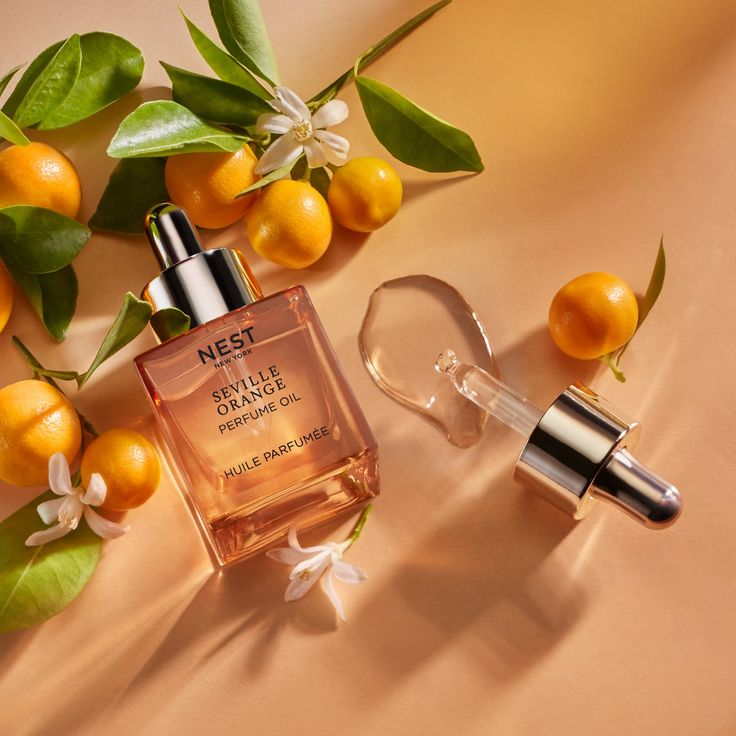
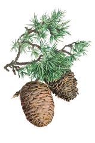
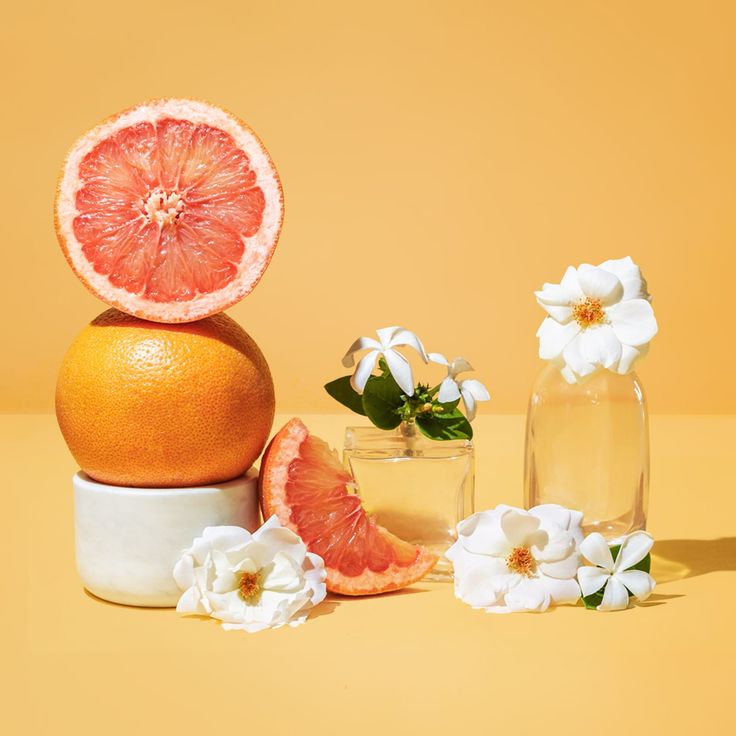
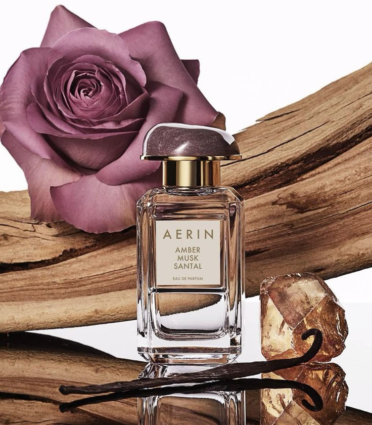

Ще ти помогнем да намериш аромат, който подхожда на твоя стил.
Започни тестаАроматите са съставени от три основни слоя: връхни, средни и базови нотки.

Задръж мишката върху даден аромат, за да научиш повече за него
Натисни мишката върху даден аромат, за да откриеш парфюми с него



Първото впечатление от аромата

Връхните нотки са първото усещане при нанасяне на парфюма. Те обикновено съдържат свежи и леки аромати като цитрусови плодове (бергамот, лимон, грейпфрут), зелени нотки или дори пикантни акорди.
Поради бързото им изпаряване, за тях се предпочита да са достатъчно оразличителни и правещи впечатление, за да изградят цялостното усещане за парфюма още в самото му начало. За избор на връхни нотки често включваме свежи или горчиви аромати. В последствие, те балансирано се преплитат със средните нотки, докато накрая не се изгубят в силата на техния аромат.
Сърцевината на аромата
Средните нотки са сърцевината на парфюма. Те започват да се усещат след като връхните нотки изчезнат. Именно те са съставките, които рамкират цялостната му концепция. Съставляват около 70% от съдържанието на аромата и са далеч по-дълготрайни.
Често съдържат флорални, плодови или пикантни аромати като роза, жасмин, праскова и канела. Те свързват връхните и базовите нотки, изграждайки балансиран ароматен профил. В състава им влизат също ароматни масла, тъй като са по-плътни и се характеризират с по-силен и устойчив аромат.
Дълготрайното ухание

Базовите нотки са основата на парфюма. Те се развиват след няколко часа и могат да останат на кожата дори цял ден. Характерното при базовите нотки е, че тяхната роля е да придадат дълбочина и сила на аромата. Представете си ги като една стабилна основа, върху която поетапно се надграждат останалите благоуханни пластове.
Те умело се смесват със средните и, за определен период от време, действат в синхрон, за да създадат едно наистина божествено усещане. Базовите нотки проникват в кожата - ето защо ароматът им се долавя дълго след изпаряването на сърцевината на парфюма. Често съдържат дървесни, мускусни и ориенталски аромати като ванилия, сандалово дърво, кехлибар и пачули. Те придават дълбочина и характер на аромата.